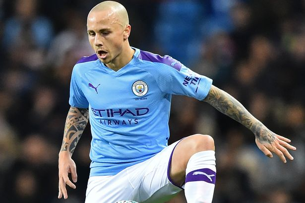

רקע: אתר זה נועד לסקר בעבורכם את שחקני הכדורגל המעניינים ביותר בכולם, כיום. באתר זה, תקבלו סיקורים על מצבם של השחקנים, על קבוצות עתידיות אפשריות ועוד. חשוב לציין - אתר זה הוא אתר דעה בלבד!
אתר זה מתייחס לשחקנים פעילים בלבד
ארלינג הלאנד
הכישרון הצעיר של דורטמונד מייצר כותרות כבר במשך זמן רב. ללא ספק הוא כבר בגיל 20 אחד החלוצים הטובים בעולם כיום. החלוץ הצעיר קורע רשתות. יש לו כבר עשרה שערי ליגה העונה ב - 8 משחקים מתוך 13 שהוא כבר שיחק. בליגת האלופות להלאנד יש 6 שערים ב- 4 משחקים שהוא שיחק. הלאנד הוא שחקן גבוה, חזק ומהיר מאוד. קשה מאוד לשחקנים להתמודד עם העוצמות שיש לשחקן הזה. אתם רוצים עוד הוכחה למה הוא טוב כל כך, אזכיר לכם את משחקו הראשון של הלאנד במדי דורטמונד, בו הוא כבש שלושער.
הוא עוד יגיע רחוק
ליונל מסי
אין ספק. מסי הוא תמיד שחקן מעניין. הוא תמיד מייצר כותרות, למרות שבהרבה מקרים הוא לא מחפש לייצר אותן, אבל בכל זאת זה מסי, אז תמיד יש עליו כותרות. השנה הזאת ללא ספק הייתה כנראה השנה הרעה והקשה ביותר של מסי, הן מבחינה קבוצתי והן מבחינה אישית. מהבחינה הקבוצתית, כמובן שהיכולת הנוראית (בעיקר מבחינה הגנתית) של ברצלונה וההשפלות שהיא חטפה (ביניהן ה - 8 - 2 המהדהד מול באיירן מינכן), אבל מעבר לכך, התלות המטורפת שנהייתה לברצלונה במסי, פגעו בו מאוד. מהבחינה האישית, מסי היה בתקופה קשה, בגלל שהוא רצה לשחק בקבוצה מצליחה, ומגיע לו להיות בקבוצה כזאת. עוד סיבה היא המוות של מראדונה ללא ספק רק חיזק את הדיכאון שלו. אבל מעבר להכול, הדיכאון הרב של מסי נבע בגלל הבעלים לשעבר של ברצלונה (ברתומאו הידוע לשמצה). ברתומאו פגע בקבוצה בכך שהוא בזבז כספים על ימין ועל שמאל, על שחקנים שנכשלו אחד אחרי השני, בכך שהוא לא חיזק את ההגנה של ברצלונה כראוי. אבל השיא היה ההגעה של קיקה סטיין לברצלונה. ברגע שהוא הגיע זה היה נראה שזה יכול להצליח, אבל ככל שעבר הזמן (ולא לקח הרבה זמן כדי להבין), התברר עד כמה שהמאמן הזה הוא תת-רמה וכישלון טוטאלי. בסופו של הדבר ה - 8 - 2 מול באיירן מינכן היה "הקש ששבר את גב הגמל" עבור מסי והוא החליט שנמאס לו. בסוף, לאחר שמסי החליט לא לקחת את קבוצת חייו לבית המשפט, הוא נשאר בברצלונה למרות הכול. לאחר מכן, ההיפרדות הבזויה מלואיס סוארס, שנחשב לאחד מהחלוצים הגדולים של המועדון, שוב הציתה את העניינים עם לאו מסי, אבל בסוף הוא נשאר בקבוצה. היה ניתן לראות עליו את חוסר הרצון שלו ואת העצבות שהייתה לו בפתיחת העונה. אבל, ניתן לומר שמסי מתחיל לחזור לעצמו בזמן האחרון ומתחיל לחזור להיות שמח. נקווה בשביל מסי, שהוא יצליח ליישר את ההדורים כמו שצריך עם ברצלונה, בין אם הוא ישאר בסוף העונה, ובין אם לא.
מגיע לו משהו טוב יותר
כריסטיאנו רונאלדו
גם בתור אוהד של מסי, אני חייב להגיד שרונאלדו הוא אחד משחקני הכדורגל הטובים בהיסטוריה. גם השנה, רונאלדו עושה את מה שהוא יודע לעשות הכי טוב, וזה להבקיע, ובכמויות. רונאלדו גם השנה לא מפסיק לכבוש במדי יובנטוס, למרות שיובנטוס עצמה לא מרשימה עד עכשיו בליגה, כשהיא ניצבת במקום השישי בלבד עם 24 נקודות, לאחר 13 מחזורים. למרות כל זה רונאלדו ממשיך בשלו, ואפילו עם הקורונה שחלה בה בתחילת העונה, רונאלדו כבר עם 12 שערי ליגה ועוד 4 בליגת האלופות, כשהוא עושה את זה בגיל 35! רונאלדו הוא אתלט ברמות הגבוהות ביותר: אם זה הגוף המפותח שלו או אם זה הניתורים הטורפים שהוא עושה, או ה"פצצות" שהוא שולח לכיוון השערים. שוב אני אגיד, גם בתור אוהד מסי, פשוט כיף לצפות ברונאלדו. אני די בטוח שהוא יהיה מסוגל לייצר מספרים מפלצתיים כאלה אפילו בעוד 5 שנים ויותר.
גם בגיל 35, רונאלדו לא עוצר
רוברט לבנדובסקי
סוף סוף רוברט לבנדובסקי מקבל את הכבוד וההערכה שמגיעים לו. חד משמעית, רוברט לבנדובסקי הוא חלוץ ענק. הוא לא פרץ רק השנה. את הפריצה שלו הוא כבר עשה לפני כמה שנים טובות, אבל רק היום הוא סוף סוף זוכה להערכה אמיתית. לבנדובסקי הוא סקורר ענק. העונה הזאת לבנדובסי התפוצץ והראה לכל אלה שלא נתנו לו את מה שמגיע לו מה הוא שווה. בעונה שעברה הוא הגיע ל-34 שערי ליגה ב-34 משחקים (שמתוכם הוא אפילו לא שיחק בשלושה). העונה יש לו עבר 17 שערים ב- 12 הופעות בליגה ועוד 3 שערים בליגת האלופות, מתוך 4 משחקים שהוא שיחק. אין ספק שהוא אחד מהחלוצים הטובים בהיסטוריה. יש שאומרים שבגלל שהוא מגיע מפולין, אז לקח כל כך הרבה זמן כדי לתת לו את ההערכה שמגיעה לו. לבנדובסי זכה בפרס שחקן השנה, אך לא בשחקן השנה של פיפ"א, מכיוון שהטקס בוטל, עקב מגפת הקורונה. לבנדובסקי הוא כוכב ענק. פשוט כיף לצפות בשחקן הזה.
סוף סוף הוא מקבל את הכבוד שמגיע לו
קיליאן אמבפה
קילאן אמבפה הוא כבר ללא ספק כוכב כדורגל בלתי מעורער. החלוץ הצרפתי שפרח בעונתו במדי מונאקו, שלאחריה עבר לפאריס סן ז'רמן. בפאריס סן ז'רמן, קיליאן אמבפה פורח, אם כי העונה הוא קצת סובל מפציעות, אבל זה לא מונע ממנו לכבוש כבר 12 שערים העונה בליגה ועוד 2 בליגת האלופות ב - 18 הופעות בסך הכול. לעומת אמבפה, פאריס סן ז'רמן לא מרשימה במיוחד בליגה, כשהיא ניצבת כעת במקום השלישי בטבלה, אם כי בפער של נקודה אחת בלבד מהמקום הראשון, אבל בכל זאת, כל שנה בשנים האחרונות, פאריס סן ז'רמן היא פייבוריטית ברורה לזכות באליפות. עם הפיטורים הלא מפתיעים במיוחד של תומאס טוכל, וההגעה של פוצ'טינו לקבוצה, אנחנו מצפים מפריס להעלות את הרמה. נחזור לאמבפה. זה כבר זמן לא מועט שהשם של אמבפה עולה ביחד עם ריאל מדריד. המדרידאים מתכננים לקנות את אמבפה כבר זמן רב, אבל יש להם בעיה אחת, והיא התשלום, בעיקר בתקופה הזאת. בפאריס דורשים מריאל מדריד תשלום לא מבוטל של כ - 300 מיליון יורו, כל מנת שיקבלו את אמבפה אליהם. כרגע, זה עדיין נראה די רחוק, אבל בעתיד הלא כל כך רחוק, כנראה שנראה את אמבפה בריאל, או אולי אפילו בקבוצה אחרת. צריך גם לציין את העובדה שהליגה הצרפתית היא כן חלשה יותר ביחס לליגות הגדולות האחרות, אבל בכל זאת, מה שאמבפה עושה וציוני הדרך שהוא כבר ציין, ללא ספק שמים אותו במעמד של אחד השחקנים המעניינים ביותר ברחבי היבשת.
היכן הוא יהיה בעתיד? האם בפאריס, ריאל או אולי אפילו במקום אחר
הארי קיין
הארי קיין ללא ספק נמצא עד עכשיו בעונה נהדרת, אולי פתיחת העונה הטובה ביותר שלו בכל הקריירה שלו. אולי טוטנהאם די מתקשה לשמור על יציבות, אבל נכון לעכשיו נראה שהארי קיין בכלל לא. החלוץ של התרנגולים סופר כבר 10 שערים ו - 11 שערים בליגה ב - 16 מחזורים. הוא והונג מין-סון נחשבים כיום לצמד אולי הכי קטלני באירופה. השניים מפרגנים רבות אחד לשני ומבשלים הרבה מאוד אחד לשני. בסך הכול, חלוץ נבחרת אנגליה הוא בן 27 היום, משמע שהוא כנראה בעונת השיא שלו. ביחד עם סון, הם ינסו להוביל את טוטנהאם של ז'וזה מוריניו אולי לאליפות מפתיעה ביותר. אמנם במשחקים האחרונים טוטנהאם פחות מרשימה, אבל היא רק 4 נקודות מהמקום הראשון כרגע, כשעוד לא עברה עדיין אפילו חצי עונה. נוסיף ונאמר שהיו פה ושם שמועות על מעבר אפשרי לבלאמקוס, אבל נכון לעכשיו נראה שהוא לא הולך לעזוב את טוטנהאם בזמן הקרוב, אם בכלל.
האם הוא מסוגל להוביל את התרנגולים לאליפות?
הונג מין סון
ומהארי קיין נעבור לחלק השני של הצמד הקטלני הזה של טוטנהאם. הונג מין סון. השחקן הדרום קוריאני הזה נמצא בעונה פנטסטית, כשהוא כובש כבר שנים-עשר שערים ומוסיף 5 בישולים ב - 16 משחקי ליגה. הוא כמעט באותו גיל של הארי קיין (סון כיום בן 28), כך שגם הוא כנראה נמצא בשיא של הקריירה שלו. הצמד הקטלני הזה שהוא וקיין יוצרים הוא בלתי ניתן לעצירה. השאלה הפשוטה שעולה היא - האם סוף סוף טוטנהאם יכולה לזכות באליפות, בזכות הצמד הפנטסטי הזה.
הארי קיין והונג מין סון. ללא ספק הצמד הקטלני ביותר באירופה כיום
אנסו פאטי
הכישרון העולה של ברצלונה פתח את העונה האחרונה בצורה פנטסטית. פאטי נראה נהדר והיה מעורב במהלכים נהדרים רבים של ברצלונה. אבל לפני כחודש וחצי, אנסו פאטי נפצע לזמן היעדרות שמוערך בכ- 4 חודשים. ניתן לראות שהפציעה הזו משפיעה על ברצלונה, בכך שהיא מקשה עליה יותר לנצח מקשים ומגדילה את התלות המטורפת שיש לקבוצה בליונל מסי. אנסו פאטי הוא כישרון עולה וצופה לו עתיד מבטיח מאוד. כמובן שה עוד מוקדם להגיד, כי הוא בסך הכול בן 18 והוא עדיין לא נתן עונה מטורפת במיוחד. זה עוד יכול לבוא, כי הוא רק בתחילת הדרך. ללא ספק יהיה מעניין מאוד לראות מה קורה עם הכישרון הצעיר של ברצלונה.
יהיה מעניין מאוד לראות לאן הוא יתפתח בעתיד
אנחל טאסנדה (אנחליניו)
המגן של לייפציג נמצא כעת בעונת שיא. העונה אנחליניו הפך לאחד השחקנים המשמעותיים ביותר בלייפציג ואולי אף למשמעותי ביותר. אנחליניו סופר כבר 7 שערים ועוד 5 בישולים ב - 19 הופעות בסך הכול בכל המסגרות (שזה הרבה מאוד למגן). המגן, עליו מנצ'סטר סיטי ויטרה בינואר האחרון, פורח בקבוצה של יוליאן נגלסמאן, ויש סיכוי טוב שאולי בקרוב נראה אותו חוזר לשחק במדי הסיטיזנס תחת פפ גוארדיולה. אנחליניו כעת רק בן 24, כך שיש לו עוד לא מעט שנים לשחק, והוא עכשיו בשנת הפריצה. השאלה שעולה היא: האם הוא ימשיך בעונה הנהדרת הזו גם בהמשך?

האם נראה אותו חוזר לשחק אצל הסיטיזנס?
ארלינג הלאנד
הכישרון הצעיר של דורטמונד מייצר כותרות כבר במשך זמן רב. ללא ספק הוא כבר בגיל 19 אחד החלוצים הטובים בעולם כיום. החלוץ הצעיר קורע רשתות. יש לו כבר עשרה שערי ליגה העונה ב - 8 משחקים מתוך 13 שהוא כבר שיחק. בליגת האלופות להלאנד יש 6 שערים ב- 4 משחקים שהוא שיחק. הלאנד הוא שחקן גבוה, חזק ומהיר מאוד. קשה מאוד לשחקנים להתמודד עם העוצמות שיש לשחקן הזה. אתם רוצים עוד הוכחה למה הוא טוב כל כך, נוכל להגיד שכבר במשחק הראשון שלו במדי דורטמונד, הוא כבש שלושער.